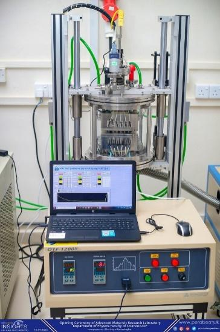
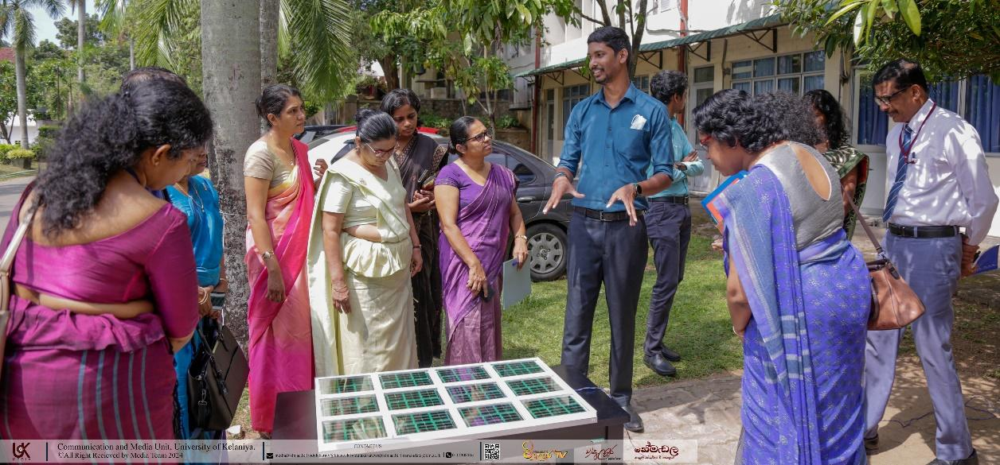
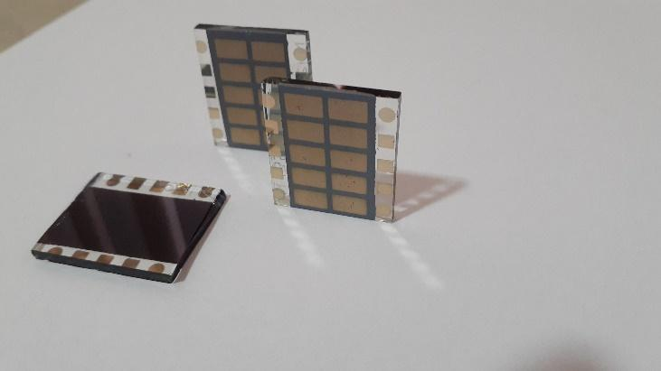
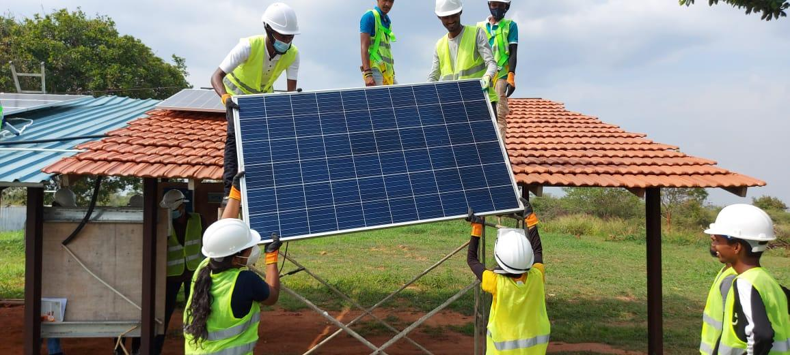

Agriculture, Food Security & Innovation
Agricultural collaboration remains one of the foundational pillars of this partnership. Despite early success in introducing soybean cultivation, challenges such as low yields and limited processing infrastructure prevented widespread adoption in Sri Lanka. The renewed collaboration seeks to address these issues through scientific and technological innovation.
Through joint efforts with the University of Illinois and its globally recognized soybean research programs, new high-yield soybean varieties have been introduced and are currently undergoing evaluation under Sri Lankan agroecological conditions.
Modern agricultural technologies, including SMART FARM systems, are being explored to improve productivity, sustainability, and resilience. A further dimension involves the utilization of locally produced soybean products as sustainable alternatives for animal feed, particularly in the poultry sector — with implications for both cost reduction and import substitution.
Key Activities


Medical Education & Health Systems Development
The collaboration in medical education represents one of the most historically significant aspects of this partnership. The influence of UIC in shaping Sri Lanka's medical education system is well established, particularly through the training of pioneering academics who transformed teaching and curriculum development at the University of Peradeniya.
Modern developments include the integration of artificial intelligence into medical education, as well as renewed emphasis on educational research, curriculum innovation, and faculty development. These efforts are complemented by extensive clinical research collaborations aimed at improving patient care.
Research areas include chronic kidney disease of unknown etiology, infectious diseases, neurological disorders, mental health challenges among youth, and advancements in surgical techniques including robotic surgery.
Research Areas


Veterinary Science & the One Health Framework
Veterinary medical education and research form another critical component of this collaboration, particularly under the globally recognized One Health framework, which integrates human, animal, and environmental health.
The partnership with the University of Illinois has enabled capacity building in specialized areas such as equine medicine, wildlife health, and clinical pathology. Academic staff exchanges, advanced degree training, student internships, and continuing professional development programs have contributed to strengthening veterinary education in Sri Lanka.
Joint research initiatives focusing on zoonotic diseases, vector-borne illnesses, and reproductive technologies are also underway. These efforts not only enhance veterinary science but also contribute indirectly to public health, food security, and ecosystem sustainability.
Key Activities


Renewable Energy & Technological Innovation
In the field of renewable energy, particularly solar technology, the collaboration has made significant progress in research, training, and prototype development. Since 2012, multiple awareness and capacity-building programs have been conducted across Sri Lankan universities to promote solar energy technologies and encourage innovation among students and academics.
Research efforts have focused on thin-film solar cell development, prototype manufacturing, and technology transfer between academia and industry. These initiatives have been supported by international expertise, including contributions from Sivananthan Laboratories and leading US research institutions.
Structured training programs have been implemented for school students, teachers, and technical personnel, creating a broader ecosystem of solar energy literacy and technical competence across Sri Lanka.
Key Activities


Photo Gallery








